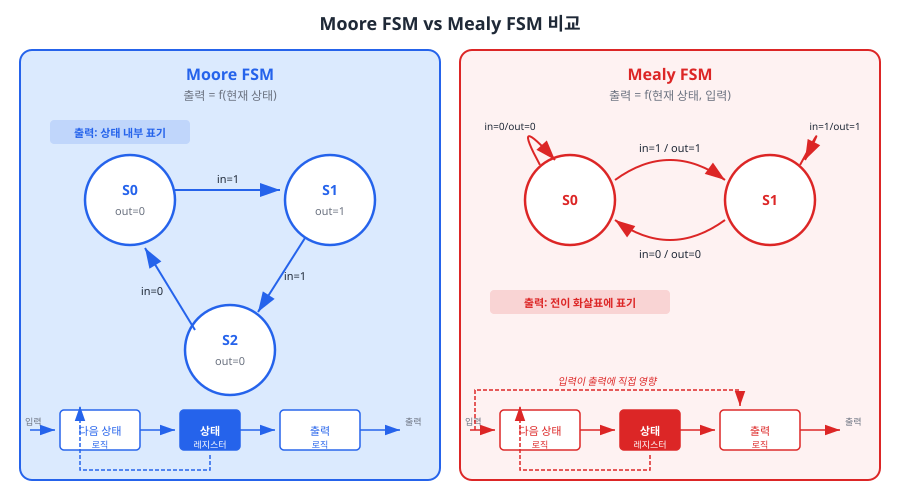
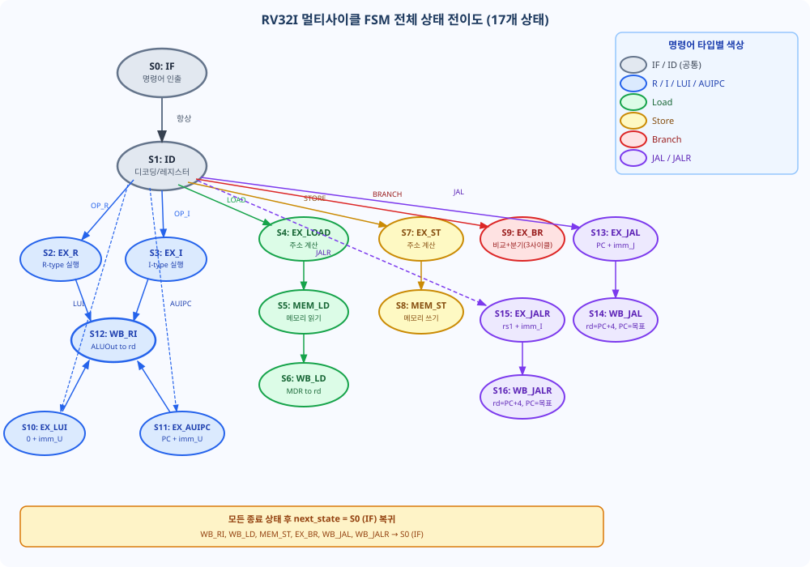
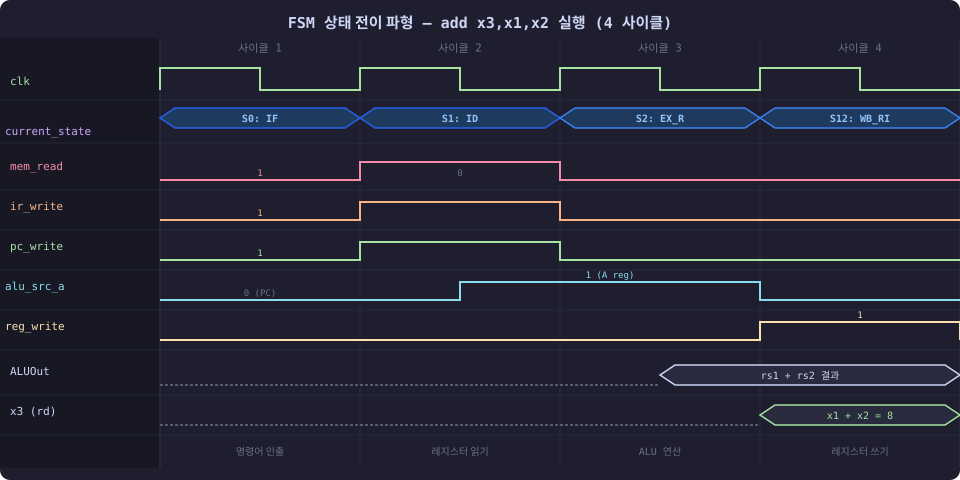
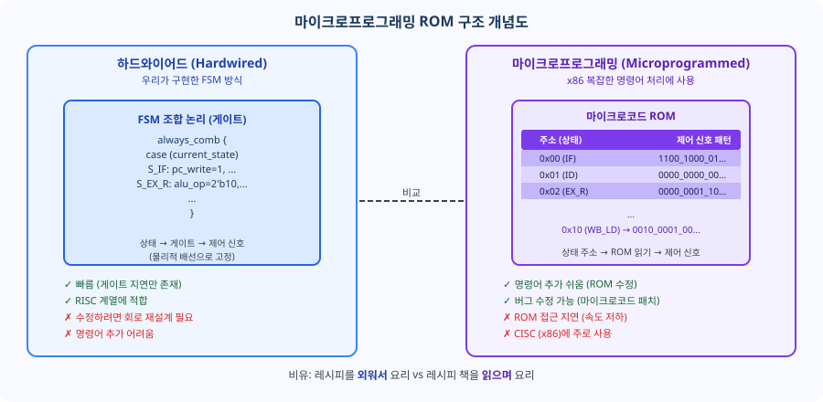

Ch07에서 우리는 멀티사이클 데이터패스를 완성했습니다. IR, MDR, A, B, ALUOut이라는 다섯 개의 중간 레지스터가 사이클 경계마다 데이터를 안전하게 보존하는 방법을 배웠습니다. 하지만 그 데이터패스는 아직 움직이지 않습니다. 누군가가 매 클럭마다 "지금은 명령어를 인출하라", "지금은 ALU를 동작시켜라", "지금은 레지스터에 결과를 써라" 하고 지시해야 합니다. 이 챕터에서는 그 지휘자, 즉 유한 상태 기계(FSM, Finite State Machine) 기반 제어 유닛을 설계하고 SystemVerilog로 구현합니다.
오케스트라에서 바이올린, 첼로, 오보에 주자들이 모두 자리에 앉아 악기를 준비했습니다. 하지만 지휘자가 없다면 어떻게 될까요? 각 연주자는 언제 연주를 시작해야 할지 모릅니다. Ch07의 데이터패스가 바로 이 상태입니다. ALU, 메모리, 레지스터 파일이라는 훌륭한 연주자들이 준비되어 있지만, 지휘자가 없어 아무것도 할 수 없습니다. 이 챕터의 주인공은 그 지휘자, FSM 제어 유닛입니다.
FSM 제어 유닛은 연주하지 않습니다. 지시만 합니다. 매 클럭 사이클마다 현재 상태를 파악하고, 어떤 제어 신호를 활성화할지 결정하며, 다음 상태로 전이합니다. 이 단순한 원리가 17개의 상태와 13개의 제어 신호로 완성된 RV32I 멀티사이클 CPU의 두뇌가 됩니다.
"Ch07에서 우리는 데이터패스를 설계했습니다. 이제 그 데이터패스에 생명을 불어넣는 제어 유닛이 필요합니다." 제어 유닛이 없는 데이터패스는 마치 엔진은 있지만 운전자가 없는 자동차와 같습니다. 하드웨어 자원은 갖추어져 있지만, 무엇을 언제 어떻게 작동시킬지를 결정하는 주체가 없습니다.
유한 상태 기계(Finite State Machine, FSM)는 유한 개의 상태(State)를 가지며, 입력에 따라 상태 간을 전이(Transition)하면서 출력(Output)을 생성하는 순차 논리 회로입니다. FSM을 구성하는 다섯 가지 요소는 다음과 같습니다.
FSM에는 두 가지 중요한 유형이 있으며, 이 둘의 차이는 출력이 무엇에 의존하는가입니다.
| 구분 | Moore FSM | Mealy FSM |
|---|---|---|
| 출력 의존 | 현재 상태만 | 현재 상태 + 입력 |
| 출력 함수 | λ(현재 상태) | λ(현재 상태, 입력) |
| 출력 안정성 | 클럭 에지 후 안정 | 입력 변화에 즉시 반응 |
| 상태 수 | 일반적으로 더 많음 | 일반적으로 더 적음 |
| 타이밍 | 안전, 예측 가능 | 조합 경로 길어질 위험 |
우리의 제어 유닛에는 Moore FSM을 선택합니다. 그 이유는 타이밍 안전성입니다. Mealy FSM에서는 출력(제어 신호)이 입력(opcode 등)에 즉시 반응합니다. 만약 opcode를 가지는 IR 레지스터에 글리치(Glitch, 순간적인 신호 변동)가 발생한다면, 제어 신호도 즉시 변동되어 데이터패스에 오동작을 유발할 수 있습니다. Moore FSM은 출력이 오직 현재 상태에만 의존하므로, 상태 레지스터가 안정된 후 출력도 안정됩니다. FPGA 합성 관점에서도 Moore FSM은 타이밍 분석이 더 단순하고 예측 가능합니다.

상태 전이도(State Transition Diagram)는 FSM의 동작을 시각적으로 표현한 그래프입니다. 읽는 방법은 간단합니다.
예를 들어 2상태 FSM을 생각해봅시다. S0에서 입력이 0이면 S0에 머물고, 입력이 1이면 S1으로 전이합니다. S1에서는 항상 S0으로 복귀합니다. S0의 출력은 0, S1의 출력은 1입니다. 우리 멀티사이클 CPU도 이와 같은 원리로 동작합니다. 단지 상태가 17개이고 전이 조건이 opcode(7비트)이며, 출력이 13개의 제어 신호일 뿐입니다.
FSM 설계에 앞서 각 명령어 타입이 몇 개의 상태(사이클)를 거치는지 미리 파악하면 전체 구조를 이해하는 데 도움이 됩니다.
| 명령어 타입 | 상태 경로 | 사이클 수 |
|---|---|---|
| R-type (ADD, SUB 등) | IF → ID → EX_R → WB_RI | 4 |
| I-type 연산 (ADDI 등) | IF → ID → EX_I → WB_RI | 4 |
| Load (LW) | IF → ID → EX_LOAD → MEM_LD → WB_LD | 5 |
| Store (SW) | IF → ID → EX_ST → MEM_ST | 4 |
| Branch (BEQ/BNE 등) | IF → ID → EX_BR | 3 |
| LUI / AUIPC | IF → ID → EX_LUI(AUIPC) → WB_RI | 4 |
| JAL | IF → ID → EX_JAL → WB_JAL | 4 |
| JALR | IF → ID → EX_JALR → WB_JALR | 4 |
흥미로운 점은 Branch 명령어가 R-type보다 1사이클 적다는 것입니다. EX_BR 단계에서 비교(ALU 연산)와 분기 결정이 동시에 이루어지고, 별도의 Write-Back이 필요하지 않기 때문입니다. 이에 대한 자세한 설명은 8.2절에서 다룹니다.
이 절에서 17개의 FSM 상태를 설계합니다. 처음 보면 압도적으로 느껴질 수 있습니다. 하지만 모든 상태는 데이터패스를 보고 기계적으로 도출할 수 있습니다. 겁먹지 마십시오. 공통 상태 2개에서 시작하여 명령어 타입별로 하나씩 추가해 나가겠습니다.
모든 명령어는 반드시 IF(명령어 인출)와 ID(디코딩 및 레지스터 읽기) 단계를 거칩니다. 이 두 상태는 opcode에 관계없이 동일하게 동작하므로 먼저 설계합니다.
IF 단계의 목적은 두 가지입니다. PC가 가리키는 메모리 주소에서 명령어를 읽어 IR에 저장하고, 동시에 PC를 PC+4로 갱신하여 다음 명령어를 준비합니다. 데이터패스를 따라가보면: PC → 메모리 주소 MUX(i_or_d=0) → 명령어 메모리 → IR 레지스터(ir_write=1). 동시에 ALU에서 PC+4를 계산(alu_src_a=PC, alu_src_b=4, alu_op=ADD)하여 PC를 갱신(pc_write=1, pc_src=00).
| 제어 신호 | 값 | 이유 |
|---|---|---|
| mem_read | 1 | 명령어 메모리 읽기 |
| ir_write | 1 | IR 레지스터에 명령어 저장 |
| pc_write | 1 | PC ← PC+4 갱신 |
| i_or_d | 0 | 메모리 주소 = PC (명령어 주소) |
| alu_src_a | 0 | ALU 입력 A = PC |
| alu_src_b | 01 | ALU 입력 B = 상수 4 |
| alu_op | 00 | ADD (PC + 4) |
| pc_src | 00 | PC 소스 = ALU 직접 출력 (PC+4) |
ID 단계에서는 IR에 저장된 명령어를 해석하고, rs1/rs2 레지스터를 읽어 A/B 레지스터에 래치합니다. 레지스터 파일은 항상 읽기 상태이므로(비동기 읽기) 별도의 제어 신호 없이 rs1_addr/rs2_addr만 제공하면 자동으로 읽힙니다. A/B 레지스터도 매 사이클 자동으로 래치됩니다.
LUI 특별 처리: opcode가 LUI일 때는 rs1 필드가 의미 없습니다(LUI는 즉치값만 사용).
이 단계에서 rs1_addr = (opcode == OP_LUI) ? 5'd0 : ir[19:15] 로직을 추가하면
A 레지스터에 x0 (= 0)이 래치됩니다. 이렇게 하면 EX_LUI 단계에서
ALU가 0 + imm_U를 계산하여 자연스럽게 LUI 동작을 구현할 수 있습니다.
| 제어 신호 | 값 | 이유 |
|---|---|---|
| alu_src_a | 0 | (PC — 분기 주소 미리 계산 준비용, 실제 사용 안 함) |
| alu_src_b | 10 | imm_ext (향후 활용 가능) |
| alu_op | 00 | ADD |
| 나머지 | 0 | 이 단계에서는 메모리/레지스터 쓰기 없음 |
ID 단계 이후, opcode가 R-type이면 EX_R → WB_RI로, I-type 연산이면 EX_I → WB_RI로 진행합니다. WB_RI는 두 경로가 공유합니다.
A 레지스터(rs1)와 B 레지스터(rs2)를 ALU에 입력하여 funct3/funct7에 따라 연산합니다.
| 제어 신호 | 값 | 이유 |
|---|---|---|
| alu_src_a | 1 | A 레지스터 (rs1) |
| alu_src_b | 00 | B 레지스터 (rs2) |
| alu_op | 10 | funct3/funct7 의존 연산 |
A 레지스터(rs1)와 imm_ext(I-type 즉치값)를 ALU에 입력합니다.
| 제어 신호 | 값 | 이유 |
|---|---|---|
| alu_src_a | 1 | A 레지스터 (rs1) |
| alu_src_b | 10 | imm_ext (I-type) |
| alu_op | 10 | funct3 의존 연산 |
ALUOut 레지스터의 값을 rd에 씁니다. R-type, I-type, LUI, AUIPC 명령어가 공통으로 사용합니다.
| 제어 신호 | 값 | 이유 |
|---|---|---|
| reg_write | 1 | rd에 결과 저장 |
| mem_to_reg | 00 | 쓰기 데이터 = ALUOut |
rs1 + imm_I를 계산하여 메모리 주소를 ALUOut에 저장합니다.
| 제어 신호 | 값 | 이유 |
|---|---|---|
| alu_src_a | 1 | A 레지스터 (rs1) |
| alu_src_b | 10 | imm_ext (I-type 오프셋) |
| alu_op | 00 | ADD (주소 계산) |
ALUOut이 가리키는 데이터 메모리 주소에서 값을 읽어 MDR에 저장합니다.
| 제어 신호 | 값 | 이유 |
|---|---|---|
| mem_read | 1 | 데이터 메모리 읽기 |
| i_or_d | 1 | 메모리 주소 = ALUOut (데이터 주소) |
MDR의 값을 rd에 씁니다.
| 제어 신호 | 값 | 이유 |
|---|---|---|
| reg_write | 1 | rd에 로드한 데이터 저장 |
| mem_to_reg | 01 | 쓰기 데이터 = MDR |
rs1 + imm_S를 계산합니다. imm_S는 S-type 즉치값으로 즉치수 생성기가 올바르게 변환합니다.
| 제어 신호 | 값 | 이유 |
|---|---|---|
| alu_src_a | 1 | A 레지스터 (rs1) |
| alu_src_b | 10 | imm_ext (S-type 오프셋) |
| alu_op | 00 | ADD |
ALUOut 주소의 메모리에 B 레지스터(rs2) 값을 씁니다. 이후 바로 S0(IF)로 복귀합니다.
| 제어 신호 | 값 | 이유 |
|---|---|---|
| mem_write | 1 | 데이터 메모리 쓰기 |
| i_or_d | 1 | 메모리 주소 = ALUOut |
Branch 명령어는 R-type보다 사이클 수가 적습니다. 그 이유는 Write-Back이 없기 때문입니다. EX_BR 단계 하나에서 세 가지 작업이 동시에 이루어집니다:
설계 핵심: 분기 목표 주소(old_pc_reg + imm_B)는 ALU가 A-B 비교에 사용 중이므로 ALU로 계산할 수 없습니다. 데이터패스에 별도의 소형 덧셈기(branch_adder)를 추가하여 ALU와 병렬로 계산합니다. branch_adder의 입력은 C-3에서 소개하는 old_pc_reg(JAL 명령어 자신의 PC)와 즉치수 생성기의 imm_B 출력입니다. 이 결과는 pc_src=2'b10으로 선택됩니다.
| 제어 신호 | 값 | 이유 |
|---|---|---|
| alu_src_a | 1 | A 레지스터 (rs1) |
| alu_src_b | 00 | B 레지스터 (rs2) |
| alu_op | 01 | SUB (비교 → zero/lt 플래그) |
| pc_write_cond | 1 | 조건 만족 시 PC 갱신 |
| pc_src | 10 | PC 소스 = branch_adder 출력 (old_pc_reg + imm_B) |
LUI는 20비트 즉치값을 12비트 왼쪽으로 시프트한 값(imm_U)을 rd에 저장합니다. ID 단계에서 rs1_addr을 5'd0으로 강제했으므로 A 레지스터에는 x0 = 0이 래치되어 있습니다. 따라서 ALU에서 0 + imm_U를 계산하면 자연스럽게 LUI 결과가 나옵니다.
| 제어 신호 | 값 | 이유 |
|---|---|---|
| alu_src_a | 1 | A 레지스터 (= x0 = 0, ID에서 강제) |
| alu_src_b | 10 | imm_ext (U-type) |
| alu_op | 00 | ADD (0 + imm_U = imm_U) |
AUIPC는 현재 명령어의 PC + imm_U를 rd에 저장합니다. PC 상대 주소 계산에 사용됩니다. old_pc_reg를 사용하여 명령어 자신의 원본 PC를 기준으로 계산합니다.
| 제어 신호 | 값 | 이유 |
|---|---|---|
| alu_src_a | 01 | old_pc_reg (명령어 자신의 원본 PC) |
| alu_src_b | 10 | imm_ext (U-type) |
| alu_op | 00 | ADD (old_pc_reg + imm_U) |
JAL은 old_pc_reg + imm_J를 점프 목표 주소로 계산합니다. 동시에 복귀 주소(PC+4)를 rd에 저장해야 합니다. IF 단계에서 이미 PC는 PC+4로 갱신되었으므로, WB_JAL 단계에서 mem_to_reg=10으로 현재 PC 레지스터 값(이미 PC+4)을 rd에 씁니다. 점프 목표 주소 계산에는 old_pc_reg를 사용하여 JAL 명령어 자신의 원본 PC를 기준으로 합니다.
| 제어 신호 | 값 | 이유 |
|---|---|---|
| alu_src_a | 01 | old_pc_reg (JAL 명령어 자신의 원본 PC) |
| alu_src_b | 10 | imm_ext (J-type) |
| alu_op | 00 | ADD (old_pc_reg + imm_J) |
| 제어 신호 | 값 | 이유 |
|---|---|---|
| reg_write | 1 | rd = 복귀 주소 |
| mem_to_reg | 10 | 쓰기 데이터 = PC (이미 PC+4) |
| pc_write | 1 | PC ← 점프 목표 주소 |
| pc_src | 01 | PC 소스 = ALUOut (PC+imm_J) |
rs1 + imm_I를 점프 목표 주소로 계산합니다. JALR은 레지스터 간접 점프입니다.
| 제어 신호 | 값 | 이유 |
|---|---|---|
| alu_src_a | 1 | A 레지스터 (rs1) |
| alu_src_b | 10 | imm_ext (I-type) |
| alu_op | 00 | ADD (rs1 + imm_I) |
JAL의 WB_JAL과 동일한 제어 신호를 사용합니다. ALUOut에는 rs1+imm_I가 저장되어 있습니다.
| 제어 신호 | 값 | 이유 |
|---|---|---|
| reg_write | 1 | rd = 복귀 주소 (PC+4) |
| mem_to_reg | 10 | 쓰기 데이터 = PC (이미 PC+4) |
| pc_write | 1 | PC ← ALUOut (rs1+imm_I) |
| pc_src | 01 | PC 소스 = ALUOut |
pc_src 인코딩 최종 정의: Ch08에서 pc_src는 3가지 값을 사용합니다.
2'b00 = ALU 직접 출력 (IF 단계에서 PC+4 계산),
2'b01 = ALUOut (분기 점프 목표 주소 — EX_JAL, EX_JALR, WB_JAL, WB_JALR),
2'b10 = branch_adder 출력 (old_pc_reg + imm_B — EX_BR에서만 사용).
Ch07 설계 시 pc_src=2'b10이 MIPS 방식의 잔재로 정의되어 있었다면 이 값으로 재정의합니다.

8.2절 소결: 지금까지 17개의 FSM 상태 전체를 살펴보았습니다. 핵심은 세 가지입니다: ① 모든 명령어는 IF(S0)와 ID(S1)를 공유한다. ② 각 상태의 제어 신호는 데이터패스를 추적하면 기계적으로 도출된다. ③ branch_adder가 분기 목표 주소를 ALU와 독립적으로 계산하며, old_pc_reg가 JAL/AUIPC의 정확한 PC 기준점을 제공한다. 다음 절에서 이를 SystemVerilog로 구현합니다.
이제 8.2절에서 설계한 17개 상태의 FSM을 SystemVerilog로 구현합니다. 멀티사이클 FSM의 구현 패턴은 산업 표준적으로 always_ff + always_comb 이중 블록을 사용합니다. 두 블록의 역할을 명확히 이해하는 것이 핵심입니다.
아래 코드가 길어 보일 수 있습니다. 하지만 구조는 단순합니다: 하나의 case문으로 각 상태에서 어떤 신호를 켤지 나열한 것입니다. S_IF 케이스를 완전히 이해했다면 나머지 16개는 같은 방식으로 읽힙니다. 지금 당장 모든 줄을 이해하지 않아도 됩니다 — 먼저 전체 구조를 파악하고, 필요한 부분을 8.2절 제어 신호 표와 대조하며 확인하십시오.
// ch08_fsm_controller.sv
// RV32I 멀티사이클 FSM 제어 유닛 (Moore FSM)
// IEEE 1800-2017 준수
module fsm_controller (
input logic clk,
input logic rst_n, // 액티브 로우 리셋
input logic [6:0] opcode, // ir_reg[6:0]
input logic [2:0] funct3, // ir_reg[14:12]
input logic alu_zero, // ALU zero 플래그 (BEQ/BNE)
input logic alu_lt, // ALU less-than 플래그 (BLT/BGE, 부호 있는 비교)
input logic alu_ltu, // ALU less-than unsigned 플래그 (BLTU/BGEU, 무부호 비교)
// 제어 신호 출력 (Ch07 데이터패스와 연결)
output logic pc_write, // PC 무조건 쓰기
output logic pc_write_cond, // 조건부 PC 쓰기 (branch_taken과 AND)
output logic i_or_d, // 메모리 주소: 0=PC, 1=ALUOut
output logic mem_read, // 메모리 읽기 인에이블
output logic mem_write, // 메모리 쓰기 인에이블
output logic ir_write, // IR 레지스터 쓰기
output logic reg_write, // 레지스터 파일 쓰기
output logic [1:0] mem_to_reg, // WB 데이터: 00=ALUOut, 01=MDR, 10=PC
output logic [1:0] alu_src_a, // ALU A: 00=PC, 01=old_pc_reg, 10=A 레지스터
output logic [1:0] alu_src_b, // ALU B: 00=B reg, 01=상수4, 10=imm_ext
output logic [1:0] alu_op, // ALU 제어: 00=ADD, 01=SUB, 10=funct 의존
output logic [1:0] pc_src, // PC 소스: 00=ALU직접(PC+4), 01=ALUOut
output logic branch_taken // 분기 조건 성립 여부
);
// ---------------------------------------------------------------
// FSM 상태 정의 (typedef enum — 파형 디버깅에 상태 이름 표시)
// ---------------------------------------------------------------
typedef enum logic [4:0] {
S_IF = 5'd0, // 명령어 인출
S_ID = 5'd1, // 디코딩 및 레지스터 읽기
S_EX_R = 5'd2, // R-type 실행
S_EX_I = 5'd3, // I-type 연산 실행
S_EX_LOAD = 5'd4, // Load 주소 계산
S_MEM_LD = 5'd5, // Load 메모리 읽기
S_WB_LD = 5'd6, // Load Write-Back
S_EX_ST = 5'd7, // Store 주소 계산
S_MEM_ST = 5'd8, // Store 메모리 쓰기
S_EX_BR = 5'd9, // Branch 비교 및 분기 결정
S_EX_LUI = 5'd10, // LUI 실행 (0 + imm_U)
S_EX_AUIPC = 5'd11, // AUIPC 실행 (PC + imm_U)
S_WB_RI = 5'd12, // R/I/LUI/AUIPC Write-Back
S_EX_JAL = 5'd13, // JAL 목표 주소 계산
S_WB_JAL = 5'd14, // JAL Write-Back 및 PC 갱신
S_EX_JALR = 5'd15, // JALR 목표 주소 계산
S_WB_JALR = 5'd16 // JALR Write-Back 및 PC 갱신
} state_t;
state_t current_state, next_state;
// ---------------------------------------------------------------
// opcode 상수 정의 (RV32I 기본 명령어 세트)
// ---------------------------------------------------------------
localparam OP_R = 7'b0110011; // R-type (ADD, SUB, AND, OR 등)
localparam OP_I_ALU = 7'b0010011; // I-type 연산 (ADDI, ANDI 등)
localparam OP_LOAD = 7'b0000011; // Load (LW, LH, LB 등)
localparam OP_STORE = 7'b0100011; // Store (SW, SH, SB 등)
localparam OP_BRANCH = 7'b1100011; // Branch (BEQ, BNE, BLT 등)
localparam OP_LUI = 7'b0110111; // LUI
localparam OP_AUIPC = 7'b0010111; // AUIPC
localparam OP_JAL = 7'b1101111; // JAL
localparam OP_JALR = 7'b1100111; // JALR
// ---------------------------------------------------------------
// 상태 레지스터 — 순차 로직 (always_ff)
// ---------------------------------------------------------------
always_ff @(posedge clk or negedge rst_n) begin
if (!rst_n)
current_state <= S_IF; // 리셋 시 명령어 인출 상태로 초기화
else
current_state <= next_state;
end
// ---------------------------------------------------------------
// 다음 상태 로직 — 조합 로직 (always_comb)
// current_state + opcode → next_state
// ---------------------------------------------------------------
always_comb begin
case (current_state)
S_IF: next_state = S_ID; // 항상 ID로 진행
S_ID: begin
// opcode에 따라 해당 실행 단계로 분기
case (opcode)
OP_R: next_state = S_EX_R;
OP_I_ALU: next_state = S_EX_I;
OP_LOAD: next_state = S_EX_LOAD;
OP_STORE: next_state = S_EX_ST;
OP_BRANCH: next_state = S_EX_BR;
OP_LUI: next_state = S_EX_LUI;
OP_AUIPC: next_state = S_EX_AUIPC;
OP_JAL: next_state = S_EX_JAL;
OP_JALR: next_state = S_EX_JALR;
default: next_state = S_IF; // 미지원 명령어: 재시작
endcase
end
// 각 실행 단계에서 다음 단계로 순차 전이
S_EX_R: next_state = S_WB_RI;
S_EX_I: next_state = S_WB_RI;
S_EX_LOAD: next_state = S_MEM_LD;
S_MEM_LD: next_state = S_WB_LD;
S_WB_LD: next_state = S_IF; // Load 완료 → 다음 명령어
S_EX_ST: next_state = S_MEM_ST;
S_MEM_ST: next_state = S_IF; // Store 완료 → 다음 명령어
S_EX_BR: next_state = S_IF; // Branch 완료 → 다음 명령어
S_EX_LUI: next_state = S_WB_RI;
S_EX_AUIPC:next_state = S_WB_RI;
S_WB_RI: next_state = S_IF;
S_EX_JAL: next_state = S_WB_JAL;
S_WB_JAL: next_state = S_IF;
S_EX_JALR: next_state = S_WB_JALR;
S_WB_JALR: next_state = S_IF;
default: next_state = S_IF; // 예외: 안전하게 IF로 복귀
endcase
end
// ---------------------------------------------------------------
// 분기 조건 판단 — funct3에 따라 branch_taken 결정
// (Moore FSM의 예외: branch_taken은 입력 의존이지만,
// pc_write_cond와 AND되어 실제 PC 갱신을 제어함)
// ---------------------------------------------------------------
always_comb begin
case (funct3)
3'b000: branch_taken = alu_zero; // BEQ: rs1 == rs2
3'b001: branch_taken = ~alu_zero; // BNE: rs1 != rs2
3'b100: branch_taken = alu_lt; // BLT: rs1 < rs2 (부호 있는 비교)
3'b101: branch_taken = ~alu_lt; // BGE: rs1 >= rs2 (부호 있는 비교)
3'b110: branch_taken = alu_ltu; // BLTU: rs1 < rs2 (무부호 비교, alu_ltu 사용)
3'b111: branch_taken = ~alu_ltu; // BGEU: rs1 >= rs2 (무부호 비교, alu_ltu 사용)
default: branch_taken = 1'b0;
endcase
end
// 주의: BLT/BGE는 부호 있는 비교(alu_lt), BLTU/BGEU는 무부호 비교(alu_ltu)를 사용합니다.
// ALU에서 두 플래그를 모두 출력해야 하며, 데이터패스에서 alu_ltu 포트를 연결해야 합니다.
// ---------------------------------------------------------------
// 출력 로직 — Moore FSM: 현재 상태만으로 제어 신호 결정
// 패턴: 먼저 모든 신호에 기본값(0) 설정 → case에서 override
// ---------------------------------------------------------------
always_comb begin
// --- 기본값: 모든 제어 신호 비활성 (래치 방지) ---
pc_write = 1'b0;
pc_write_cond = 1'b0;
i_or_d = 1'b0;
mem_read = 1'b0;
mem_write = 1'b0;
ir_write = 1'b0;
reg_write = 1'b0;
mem_to_reg = 2'b00;
alu_src_a = 1'b0;
alu_src_b = 2'b00;
alu_op = 2'b00;
pc_src = 2'b00;
case (current_state)
// --- S0: IF — 명령어 인출 + PC+4 계산 ---
S_IF: begin
mem_read = 1'b1; // 명령어 메모리 읽기
ir_write = 1'b1; // IR에 명령어 저장
pc_write = 1'b1; // PC <- PC+4
alu_src_a = 2'b00; // ALU A = PC (현재 PC 레지스터)
alu_src_b = 2'b01; // ALU B = 4
alu_op = 2'b00; // ADD
pc_src = 2'b00; // PC 소스 = ALU 직접 (PC+4)
end
// --- S1: ID — 레지스터 읽기 (A, B 자동 래치) ---
S_ID: begin
// 레지스터 파일은 비동기 읽기 — 별도 인에이블 불필요
// A, B 레지스터는 매 사이클 자동으로 rs1, rs2 값을 래치
// alu_src_a/alu_src_b 설정은 branch_adder 없이 분기 주소를 미리 계산하는
// 최적화 방향을 염두에 둔 것. 현재 구현에서는 branch_adder를 사용하므로 미사용.
alu_src_a = 2'b00; // PC (분기 주소 계산 준비 — 현재 미사용)
alu_src_b = 2'b10; // imm_ext
alu_op = 2'b00; // ADD
end
// --- S2: EX_R — R-type ALU 연산 ---
S_EX_R: begin
alu_src_a = 2'b10; // rs1 (A 레지스터)
alu_src_b = 2'b00; // rs2
alu_op = 2'b10; // funct3/funct7 의존
end
// --- S3: EX_I — I-type ALU 연산 ---
S_EX_I: begin
alu_src_a = 2'b10; // rs1 (A 레지스터)
alu_src_b = 2'b10; // imm_ext (I-type)
alu_op = 2'b10; // funct3 의존
end
// --- S4: EX_LOAD — Load 주소 계산 (rs1 + imm_I) ---
S_EX_LOAD: begin
alu_src_a = 2'b10; // rs1 (A 레지스터)
alu_src_b = 2'b10; // imm_ext (I-type)
alu_op = 2'b00; // ADD
end
// --- S5: MEM_LD — 데이터 메모리 읽기 ---
S_MEM_LD: begin
mem_read = 1'b1; // 데이터 메모리 읽기
i_or_d = 1'b1; // 주소 = ALUOut
end
// --- S6: WB_LD — Load Write-Back (MDR → rd) ---
S_WB_LD: begin
reg_write = 1'b1; // rd에 쓰기
mem_to_reg = 2'b01; // 데이터 = MDR
end
// --- S7: EX_ST — Store 주소 계산 (rs1 + imm_S) ---
S_EX_ST: begin
alu_src_a = 2'b10; // rs1 (A 레지스터)
alu_src_b = 2'b10; // imm_ext (S-type)
alu_op = 2'b00; // ADD
end
// --- S8: MEM_ST — 데이터 메모리 쓰기 ---
S_MEM_ST: begin
mem_write = 1'b1; // 데이터 메모리 쓰기
i_or_d = 1'b1; // 주소 = ALUOut
end
// --- S9: EX_BR — Branch 비교 및 분기 결정 ---
S_EX_BR: begin
alu_src_a = 2'b10; // rs1 (A 레지스터)
alu_src_b = 2'b00; // rs2 (B 레지스터)
alu_op = 2'b01; // SUB → zero/lt/ltu 플래그 생성
pc_write_cond = 1'b1; // 조건부 PC 갱신 (branch_taken과 AND)
pc_src = 2'b10; // PC 소스 = branch_adder 출력 (old_pc_reg + imm_B)
end
// --- S10: EX_LUI — LUI (A=0 + imm_U) ---
S_EX_LUI: begin
alu_src_a = 2'b10; // A 레지스터 (ID에서 x0=0 강제, A=0)
alu_src_b = 2'b10; // imm_ext (U-type)
alu_op = 2'b00; // ADD (0 + imm_U)
end
// --- S11: EX_AUIPC — AUIPC (old_pc_reg + imm_U) ---
S_EX_AUIPC: begin
alu_src_a = 2'b01; // old_pc_reg (명령어 자신의 원본 PC)
alu_src_b = 2'b10; // imm_ext (U-type)
alu_op = 2'b00; // ADD
end
// --- S12: WB_RI — R/I/LUI/AUIPC Write-Back ---
S_WB_RI: begin
reg_write = 1'b1; // rd에 쓰기
mem_to_reg = 2'b00; // 데이터 = ALUOut
end
// --- S13: EX_JAL — JAL 목표 주소 (old_pc_reg + imm_J) ---
S_EX_JAL: begin
alu_src_a = 2'b01; // old_pc_reg (JAL 명령어 자신의 원본 PC)
alu_src_b = 2'b10; // imm_ext (J-type)
alu_op = 2'b00; // ADD
end
// --- S14: WB_JAL — JAL Write-Back + PC 갱신 ---
S_WB_JAL: begin
reg_write = 1'b1; // rd = PC+4 (복귀 주소)
mem_to_reg = 2'b10; // 데이터 = PC 레지스터 (이미 PC+4)
pc_write = 1'b1; // PC <- ALUOut (점프 목표)
pc_src = 2'b01; // ALUOut
end
// --- S15: EX_JALR — JALR 목표 주소 (rs1 + imm_I) ---
S_EX_JALR: begin
alu_src_a = 2'b10; // A 레지스터 (rs1)
alu_src_b = 2'b10; // imm_ext (I-type)
alu_op = 2'b00; // ADD
end
// --- S16: WB_JALR — JALR Write-Back + PC 갱신 ---
S_WB_JALR: begin
reg_write = 1'b1; // rd = PC+4
mem_to_reg = 2'b10; // 데이터 = PC 레지스터
pc_write = 1'b1; // PC <- ALUOut (rs1+imm_I)
pc_src = 2'b01; // ALUOut
end
default: begin
// 기본값 유지 — next_state 로직에서 S_IF로 복귀
end
endcase
end
endmodule
8.3절 소결: FSM 코드 구조를 요약합니다.
always_ff는 상태를 기억하고, always_comb는 두 가지 일을 합니다 —
현재 상태로 제어 신호를 출력하고(출력 로직), 현재 상태와 opcode로 다음 상태를 결정합니다(전이 로직).
기본값 선설정 패턴은 래치를 방지합니다. typedef enum은 파형 뷰어에서 상태 이름을 보여줍니다.
FSM 제어 유닛이 출력하는 alu_op[1:0]은 추상적인 명령입니다. 실제 ALU는 4비트 alu_ctrl을 입력받습니다. alu_op를 받아 funct3/funct7로 세부 연산을 결정하는 별도 모듈을 구현합니다.
// ch08_alu_control.sv
// ALU 제어 유닛 — FSM의 alu_op + funct3/funct7 → 4비트 ALU 연산 코드
// alu_op 의미: 00=ADD 강제, 01=SUB 강제, 10=명령어 의존
module alu_control (
input logic [1:0] alu_op, // FSM에서 출력한 추상 ALU 명령
input logic [2:0] funct3, // 명령어 funct3 필드
input logic funct7_b5, // ir_reg[30]: ADD/SUB, SRL/SRA 구분
output logic [3:0] alu_ctrl // 실제 ALU 연산 코드 (Ch04 ALU 입력)
);
// alu_ctrl 인코딩 (Ch04 ALU와 동일하게 유지)
// 4'b0000=ADD, 4'b0001=SUB, 4'b0010=AND, 4'b0011=OR
// 4'b0100=XOR, 4'b0101=SLL, 4'b0110=SRL, 4'b0111=SRA
// 4'b1000=SLT (부호), 4'b1001=SLTU (무부호)
always_comb begin
case (alu_op)
2'b00: alu_ctrl = 4'b0000; // ADD 강제 (IF, EX_LOAD, EX_ST 등)
2'b01: alu_ctrl = 4'b0001; // SUB 강제 (Branch 비교)
2'b10: begin // 명령어 funct3/funct7 의존 (R/I-type)
case (funct3)
3'b000: alu_ctrl = funct7_b5 ? 4'b0001 : 4'b0000; // SUB/ADD
3'b001: alu_ctrl = 4'b0101; // SLL
3'b010: alu_ctrl = 4'b1000; // SLT (부호)
3'b011: alu_ctrl = 4'b1001; // SLTU (무부호)
3'b100: alu_ctrl = 4'b0100; // XOR
3'b101: alu_ctrl = funct7_b5 ? 4'b0111 : 4'b0110; // SRA/SRL
3'b110: alu_ctrl = 4'b0011; // OR
3'b111: alu_ctrl = 4'b0010; // AND
default: alu_ctrl = 4'b0000;
endcase
end
default: alu_ctrl = 4'b0000;
endcase
end
endmodule두 챕터에 걸쳐 설계한 데이터패스와 FSM이 지금 하나의 CPU로 합쳐집니다. 멀티사이클 CPU가 처음 실행되는 순간입니다. Ch07의 데이터패스와 Ch08의 FSM 제어 유닛이 하나의 CPU로 합쳐졌습니다. 이 순간을 즐기십시오. 통합 후에는 시뮬레이션으로 FSM 상태 전이가 올바른지 검증합니다.
// ch08_multicycle_top.sv
// RV32I 멀티사이클 CPU 최상위 모듈
// 데이터패스 (Ch07) + FSM 제어 유닛 (Ch08) 연결
module multicycle_top (
input logic clk,
input logic rst_n
);
// 내부 연결 신호 (FSM → 데이터패스)
logic pc_write, pc_write_cond, i_or_d;
logic mem_read, mem_write, ir_write, reg_write;
logic [1:0] mem_to_reg, alu_src_b, alu_op, pc_src;
logic [1:0] alu_src_a; // 2비트 확장 (00=PC, 01=old_pc_reg, 10=A 레지스터)
logic branch_taken;
// 데이터패스 → FSM
logic [6:0] opcode;
logic [2:0] funct3;
logic alu_zero, alu_lt, alu_ltu;
// ALU 제어
logic [1:0] alu_op_fsm;
logic [3:0] alu_ctrl;
logic [1:0] alu_src_a_w; // 2비트 확장된 alu_src_a
// FSM 제어 유닛 인스턴스
fsm_controller u_fsm (
.clk (clk),
.rst_n (rst_n),
.opcode (opcode),
.funct3 (funct3),
.alu_zero (alu_zero),
.alu_lt (alu_lt),
.alu_ltu (alu_ltu),
.pc_write (pc_write),
.pc_write_cond(pc_write_cond),
.i_or_d (i_or_d),
.mem_read (mem_read),
.mem_write (mem_write),
.ir_write (ir_write),
.reg_write (reg_write),
.mem_to_reg (mem_to_reg),
.alu_src_a (alu_src_a),
.alu_src_b (alu_src_b),
.alu_op (alu_op_fsm),
.pc_src (pc_src),
.branch_taken (branch_taken)
);
// ALU 제어 유닛 인스턴스
alu_control u_alu_ctrl (
.alu_op (alu_op_fsm),
.funct3 (funct3),
.funct7_b5 (/* ir_reg[30] — 데이터패스에서 연결 */),
.alu_ctrl (alu_ctrl)
);
// 데이터패스 인스턴스 (Ch07에서 설계한 모듈)
multicycle_datapath u_datapath (
.clk (clk),
.rst_n (rst_n),
// 제어 입력
.pc_write (pc_write),
.pc_write_cond(pc_write_cond),
.branch_taken (branch_taken),
.i_or_d (i_or_d),
.mem_read (mem_read),
.mem_write (mem_write),
.ir_write (ir_write),
.reg_write (reg_write),
.mem_to_reg (mem_to_reg),
.alu_src_a (alu_src_a),
.alu_src_b (alu_src_b),
.alu_ctrl (alu_ctrl),
.pc_src (pc_src),
// 상태 출력 (FSM 입력으로 연결)
.opcode (opcode),
.funct3 (funct3),
.alu_zero (alu_zero),
.alu_lt (alu_lt),
.alu_ltu (alu_ltu)
);
endmodule시뮬레이션에서 검증할 명령어 시퀀스는 아래와 같습니다. 각 명령어가 올바른 FSM 상태 경로를 따라 실행되는지 파형으로 확인합니다.
// ch08_multicycle_tb.sv — 테스트벤치
module multicycle_tb;
logic clk, rst_n;
// 클럭 생성 (10ns 주기)
initial clk = 0;
always #5 clk = ~clk;
// DUT 인스턴스
multicycle_top u_dut (
.clk (clk),
.rst_n (rst_n)
);
// 검증 시퀀스
// 메모리 초기화는 데이터패스 내부 unified_memory에서 수행
// 명령어 메모리 (주소 0x00~):
// 0x00: addi x1, x0, 5 // x1 = 5
// 0x04: addi x2, x0, 3 // x2 = 3
// 0x08: add x3, x1, x2 // x3 = 8 (R-type, 4사이클)
// 0x0C: sw x3, 0(x0) // mem[0] = 8 (Store, 4사이클)
// 0x10: lw x4, 0(x0) // x4 = 8 (Load, 5사이클)
// 0x14: beq x1, x2, 8 // not taken (Branch, 3사이클)
// 0x18: beq x3, x3, 8 // taken: PC = 0x20 (Branch, 3사이클)
// 0x1C: addi x5, x0, 99 // 실행되면 안 됨 (skipped)
// 0x20: jal x6, 4 // x6=0x24, PC=0x24 (JAL, 4사이클)
// 0x24: jalr x7, x6, 0 // x7=0x28, PC=x6+0=0x24 (무한루프)
initial begin
rst_n = 0;
repeat(2) @(posedge clk);
rst_n = 1;
// 충분한 사이클 실행
repeat(80) @(posedge clk);
$display("=== 시뮬레이션 완료 ===");
$finish;
end
// 자동 검증 — current_state 및 레지스터 값 모니터링
// (실제 신호명은 계층적 경로로 접근)
initial begin
$monitor("t=%0t state=%s pc=%h x3=%h x4=%h",
$time,
u_dut.u_fsm.current_state.name(), // enum 이름 출력
u_dut.u_datapath.pc_reg,
u_dut.u_datapath.u_regfile.regs[3],
u_dut.u_datapath.u_regfile.regs[4]);
end
// VCD 파형 덤프 (Vivado/VCS 시뮬레이션)
initial begin
$dumpfile("ch08_multicycle.vcd");
$dumpvars(0, multicycle_tb);
end
endmodule| 명령어 | 예상 상태 시퀀스 | 확인 항목 |
|---|---|---|
| addi x1, x0, 5 | S_IF → S_ID → S_EX_I → S_WB_RI | 4사이클 후 x1=5 |
| add x3, x1, x2 | S_IF → S_ID → S_EX_R → S_WB_RI | 4사이클 후 x3=8 |
| sw x3, 0(x0) | S_IF → S_ID → S_EX_ST → S_MEM_ST | 4사이클 후 mem[0]=8 |
| lw x4, 0(x0) | S_IF → S_ID → S_EX_LOAD → S_MEM_LD → S_WB_LD | 5사이클 후 x4=8 |
| beq x1, x2, 8 (not taken) | S_IF → S_ID → S_EX_BR | 3사이클, PC 변경 없음 |
| beq x3, x3, 8 (taken) | S_IF → S_ID → S_EX_BR | 3사이클, PC = 0x20 |

멀티사이클 CPU는 단일 사이클보다 항상 느린가요? 그렇지 않습니다. 성능은 두 가지 요소의 곱으로 결정됩니다: 클럭 주파수(Fmax)와 CPI(사이클/명령어). 처리량(Throughput) = Fmax / CPI_avg. 단일 사이클은 CPI=1이지만 Fmax가 낮고, 멀티사이클은 CPI>1이지만 Fmax가 높습니다.
CPI(Cycles Per Instruction, 명령어당 사이클 수)는 명령어 타입별 사이클 수와 프로그램 내 명령어 비율(Mix)의 가중 평균으로 계산합니다.
CPI_avg = Σ (CPI_i × 비율_i)
| 명령어 타입 | 단일 사이클 CPI | 멀티사이클 CPI | FSM 상태 경로 |
|---|---|---|---|
| R-type | 1 | 4 | IF→ID→EX_R→WB_RI |
| I-type 연산 | 1 | 4 | IF→ID→EX_I→WB_RI |
| Load | 1 | 5 | IF→ID→EX_LOAD→MEM_LD→WB_LD |
| Store | 1 | 4 | IF→ID→EX_ST→MEM_ST |
| Branch | 1 | 3 | IF→ID→EX_BR |
| LUI / AUIPC | 1 | 4 | IF→ID→EX_LUI(AUIPC)→WB_RI |
| JAL / JALR | 1 | 4 | IF→ID→EX_JAL(JALR)→WB_JAL(JALR) |
일반적인 RISC-V 프로그램의 명령어 분포를 R:I:Load:Store:Branch = 40%:20%:20%:10%:10%로 가정합니다.
CPI_avg = 4×0.40 + 4×0.20 + 5×0.20 + 4×0.10 + 3×0.10
= 1.6 + 0.8 + 1.0 + 0.4 + 0.3 = 4.1
| 구분 | 단일 사이클 (Ch06) | 멀티사이클 (Ch07-08) | 파이프라인 (Ch09~) |
|---|---|---|---|
| CPI (평균) | 1.0 | 4.1 | ~1.0 (이상적) |
| Fmax (예상, Basys 3) | ~25 MHz | ~50 MHz | ~100 MHz |
| 처리량 (백만 명령어/초, MIPS, Million Instructions Per Second — 아키텍처 MIPS와 별개) | 25 / 1.0 = 25 | 50 / 4.1 ≈ 12.2 | 100 / 1.0 = 100 |
| LUT 사용량 | ~1,850 | ~1,200 | ~2,400 |
| 임계 경로 | IF+EX+MEM+WB 전체 | 한 단계(IF 또는 EX) | 한 스테이지 |
위 표에서 놀라운 사실이 드러납니다. 멀티사이클이 단일 사이클보다 처리량이 낮습니다! Fmax가 2배가 되어도 CPI가 4.1배이므로 처리량은 25 vs 12.2 MIPS로 단일 사이클이 유리합니다. 멀티사이클의 Fmax가 단일 사이클 CPI_avg 배수(= 4.1배)를 초과해야 비로소 멀티사이클이 유리해집니다. 즉, 단일 사이클 Fmax가 25MHz라면 멀티사이클이 25 × 4.1 = 102.5 MHz 이상이어야 합니다. FPGA에서 이는 쉽지 않습니다.
그렇다면 멀티사이클의 진정한 가치는 무엇인가? 처리량이 아니라 자원 절감과 교육적 단계입니다. 단일 사이클 대비 LUT 사용량이 약 35% 줄어듭니다(메모리 하나로 통합, MUX 공유). 더 중요하게는, 멀티사이클의 각 FSM 상태가 파이프라인의 각 스테이지와 1:1 대응하므로 파이프라인 이해를 위한 완벽한 전 단계 학습이 됩니다. 성능만을 위해서라면 파이프라인이 필요합니다.
우리가 구현한 FSM은 하드와이어드(Hardwired) 제어 방식입니다. 상태 전이와 출력이 게이트와 플립플롭으로 물리적으로 고정되어 있습니다. 마이크로프로그래밍(Microprogramming)은 다른 접근입니다.
비유하자면, 하드와이어드 제어는 레시피를 완전히 외운 요리사입니다. 레시피 없이도 즉시 요리할 수 있어 빠르지만, 레시피가 바뀌면 다시 처음부터 외워야 합니다. 마이크로프로그래밍은 레시피 책을 읽으며 요리하는 요리사입니다. 책(ROM)만 바꾸면 다른 요리가 가능하지만, 매번 책을 읽는 시간이 걸립니다.
마이크로프로그래밍 방식에서는 FSM 상태 번호(마이크로프로그램 카운터)가 ROM의 주소로 사용됩니다. ROM의 각 행에는 해당 상태에서 출력해야 할 제어 신호 패턴(마이크로명령어)이 저장되어 있습니다. 상태 전이도 ROM에서 읽어옵니다(다음 주소 필드).

현대 프로세서에서의 위치: RISC-V, ARM Cortex 계열은 명령어 집합이 단순하고 정형적이므로 하드와이어드 제어가 표준입니다. x86/x86-64는 복잡하고 가변 길이인 CISC 명령어를 내부적으로 단순한 마이크로오퍼레이션(μop)으로 변환하는 데 마이크로코드를 활용합니다. Intel CPU의 마이크로코드는 펌웨어 업데이트로 패치 가능하며, 이것이 Spectre/Meltdown 취약점 수정에 활용되었습니다.
이 대응표는 Ch09(파이프라인)로 가는 핵심 교량입니다. 지금 이해해두면 파이프라인이 훨씬 쉬워집니다.
| 멀티사이클 FSM 상태 | 파이프라인 스테이지 | 역할 |
|---|---|---|
| S0: IF | IF (Instruction Fetch) | 명령어 인출, PC+4 |
| S1: ID | ID (Instruction Decode) | 디코딩, 레지스터 읽기 |
| S2~S9, S10~S13, S15: EX_* | EX (Execute) | ALU 연산, 주소 계산 |
| S5: MEM_LD, S8: MEM_ST | MEM (Memory Access) | 메모리 읽기/쓰기 |
| S6: WB_LD, S12: WB_RI, S14: WB_JAL, S16: WB_JALR | WB (Write Back) | 레지스터에 결과 저장 |
핵심 연결 문장: 멀티사이클 CPU는 한 명령어를 한 번에 하나씩 FSM 상태로 순서대로 실행합니다. 파이프라인은 각 FSM 상태를 동시에 다른 명령어에 적용합니다. 즉, 멀티사이클의 각 상태가 파이프라인의 각 스테이지가 됩니다. 멀티사이클에서 S_IF, S_ID, S_EX_R, S_WB_RI가 하나의 명령어를 위해 순서대로 동작한다면, 파이프라인에서는 사이클 1에 명령어 A가 IF, 명령어 B가 ID, 명령어 C가 EX, 명령어 D가 WB를 동시에 실행합니다.
이제 여러분은 멀티사이클 CPU를 완전히 이해하고 구현했습니다. 17개 FSM 상태를 설계하고, SystemVerilog로 구현하고, 시뮬레이션으로 검증했습니다. 파이프라인 학습을 위한 모든 준비가 갖추어졌습니다. Part 3을 통해 여러분은 단순 데이터패스에서 완전한 멀티사이클 CPU로 발전했습니다.
Ch09 예고: 다음 챕터에서 우리는 FSM 상태를 겹쳐 실행합니다. 사이클 1에서 명령어 A가 S_IF를 실행하는 동안, 동시에 명령어 B는 S_ID를, 명령어 C는 S_EX를, 명령어 D는 S_WB를 실행합니다. 이것이 파이프라인입니다. 멀티사이클을 완전히 이해한 여러분에게 파이프라인은 "상태들을 시간 축으로 겹치는 것"으로 이해될 것입니다.
// BLT 명령어: if (rs1 < rs2) PC <- PC + imm_B
// S0(IF): mem_read=___, ir_write=___, pc_write=___
// S1(ID): alu_src_a=___, alu_src_b=___
// S9(EX_BR): alu_src_a=___, alu_src_b=___, alu_op=___
// pc_write_cond=___, pc_src=___
// branch_taken = (funct3==3'b100) ? ___ : 0// 검증 목표: BEQ taken 확인
addi x1, x0, 5 // x1 = 5
addi x2, x0, 5 // x2 = 5
beq x1, x2, 8 // taken: PC = (beq 주소) + 8
// 이 줄은 실행되면 안 됨 (skipped)
addi x3, x0, 99이 절의 코드는 지금 당장 전부 이해하지 않아도 됩니다. 앞서 설명한 내용을 종합한 참고 자료로 활용하십시오. 직접 타이핑하며 익히는 것이 가장 효과적입니다. 코드에 대한 궁금증이 생기면 해당 절로 돌아가 설명을 확인하십시오.
// ch08_fsm_controller.sv — RV32I 멀티사이클 FSM 제어 유닛 (완전 버전)
// IEEE 1800-2017, 들여쓰기 3칸, snake_case, 한국어 주석
module fsm_controller (
input logic clk,
input logic rst_n,
input logic [6:0] opcode,
input logic [2:0] funct3,
input logic alu_zero,
input logic alu_lt, // 부호 있는 less-than
input logic alu_ltu, // 무부호 less-than (BLTU/BGEU용)
output logic pc_write,
output logic pc_write_cond,
output logic i_or_d,
output logic mem_read,
output logic mem_write,
output logic ir_write,
output logic reg_write,
output logic [1:0] mem_to_reg,
output logic [1:0] alu_src_a, // 00=PC, 01=old_pc_reg, 10=A 레지스터
output logic [1:0] alu_src_b,
output logic [1:0] alu_op,
output logic [1:0] pc_src,
output logic branch_taken
);
typedef enum logic [4:0] {
S_IF=5'd0, S_ID=5'd1, S_EX_R=5'd2, S_EX_I=5'd3,
S_EX_LOAD=5'd4, S_MEM_LD=5'd5, S_WB_LD=5'd6,
S_EX_ST=5'd7, S_MEM_ST=5'd8, S_EX_BR=5'd9,
S_EX_LUI=5'd10, S_EX_AUIPC=5'd11, S_WB_RI=5'd12,
S_EX_JAL=5'd13, S_WB_JAL=5'd14,
S_EX_JALR=5'd15, S_WB_JALR=5'd16
} state_t;
state_t current_state, next_state;
localparam OP_R=7'b0110011, OP_I_ALU=7'b0010011;
localparam OP_LOAD=7'b0000011, OP_STORE=7'b0100011;
localparam OP_BRANCH=7'b1100011, OP_LUI=7'b0110111;
localparam OP_AUIPC=7'b0010111, OP_JAL=7'b1101111;
localparam OP_JALR=7'b1100111;
always_ff @(posedge clk or negedge rst_n)
if (!rst_n) current_state <= S_IF;
else current_state <= next_state;
always_comb begin
case (current_state)
S_IF: next_state = S_ID;
S_ID: case (opcode)
OP_R: next_state=S_EX_R; OP_I_ALU: next_state=S_EX_I;
OP_LOAD: next_state=S_EX_LOAD; OP_STORE: next_state=S_EX_ST;
OP_BRANCH: next_state=S_EX_BR; OP_LUI: next_state=S_EX_LUI;
OP_AUIPC: next_state=S_EX_AUIPC; OP_JAL: next_state=S_EX_JAL;
OP_JALR: next_state=S_EX_JALR;
default: next_state=S_IF;
endcase
S_EX_R,S_EX_I,S_EX_LUI,S_EX_AUIPC: next_state=S_WB_RI;
S_EX_LOAD: next_state=S_MEM_LD;
S_MEM_LD: next_state=S_WB_LD;
S_WB_LD, S_MEM_ST, S_EX_BR, S_WB_RI, S_WB_JAL, S_WB_JALR:
next_state=S_IF;
S_EX_ST: next_state=S_MEM_ST;
S_EX_JAL: next_state=S_WB_JAL;
S_EX_JALR: next_state=S_WB_JALR;
default: next_state=S_IF;
endcase
end
always_comb begin
case (funct3)
3'b000: branch_taken = alu_zero; // BEQ
3'b001: branch_taken = ~alu_zero; // BNE
3'b100: branch_taken = alu_lt; // BLT (부호)
3'b101: branch_taken = ~alu_lt; // BGE (부호)
3'b110: branch_taken = alu_ltu; // BLTU (무부호)
3'b111: branch_taken = ~alu_ltu; // BGEU (무부호)
default: branch_taken = 1'b0;
endcase
end
always_comb begin
{pc_write,pc_write_cond,i_or_d,mem_read,mem_write,
ir_write,reg_write,mem_to_reg,alu_src_a,alu_src_b,
alu_op,pc_src} = '0;
// branch_taken은 위의 funct3 always_comb 블록에서만 구동 (이중 구동 방지)
case (current_state)
S_IF: begin
mem_read=1; ir_write=1; pc_write=1;
alu_src_a=2'b00; alu_src_b=2'b01; pc_src=2'b00; // PC
end
S_ID: begin alu_src_a=2'b00; alu_src_b=2'b10; end // don't care (미사용)
S_EX_R: begin alu_src_a=2'b10; alu_op=2'b10; end
S_EX_I: begin alu_src_a=2'b10; alu_src_b=2'b10; alu_op=2'b10; end
S_EX_LOAD,S_EX_ST: begin alu_src_a=2'b10; alu_src_b=2'b10; end
S_MEM_LD: begin mem_read=1; i_or_d=1; end
S_WB_LD: begin reg_write=1; mem_to_reg=2'b01; end
S_MEM_ST: begin mem_write=1; i_or_d=1; end
S_EX_BR: begin
alu_src_a=2'b10; alu_op=2'b01; // rs1, SUB
pc_write_cond=1; pc_src=2'b10; // branch_adder 출력
end
S_EX_LUI: begin alu_src_a=2'b10; alu_src_b=2'b10; end // A=x0=0
S_EX_AUIPC: begin alu_src_a=2'b01; alu_src_b=2'b10; end // old_pc_reg
S_WB_RI: begin reg_write=1; end
S_EX_JAL: begin alu_src_a=2'b01; alu_src_b=2'b10; end // old_pc_reg
S_WB_JAL,S_WB_JALR: begin
reg_write=1; mem_to_reg=2'b10;
pc_write=1; pc_src=2'b01;
end
S_EX_JALR: begin alu_src_a=2'b10; alu_src_b=2'b10; end // rs1
default: ;
endcase
end
endmodule// ch08_alu_control.sv — ALU 제어 유닛
module alu_control (
input logic [1:0] alu_op,
input logic [2:0] funct3,
input logic funct7_b5,
output logic [3:0] alu_ctrl
);
always_comb begin
case (alu_op)
2'b00: alu_ctrl = 4'b0000; // ADD 강제
2'b01: alu_ctrl = 4'b0001; // SUB 강제
2'b10: case (funct3)
3'b000: alu_ctrl = funct7_b5 ? 4'b0001 : 4'b0000;
3'b001: alu_ctrl = 4'b0101;
3'b010: alu_ctrl = 4'b1000;
3'b011: alu_ctrl = 4'b1001;
3'b100: alu_ctrl = 4'b0100;
3'b101: alu_ctrl = funct7_b5 ? 4'b0111 : 4'b0110;
3'b110: alu_ctrl = 4'b0011;
3'b111: alu_ctrl = 4'b0010;
default: alu_ctrl = 4'b0000;
endcase
default: alu_ctrl = 4'b0000;
endcase
end
endmodule// ch08_multicycle_top.sv — 멀티사이클 CPU 최상위 (포트 연결)
module multicycle_top (
input logic clk,
input logic rst_n
);
logic pc_write, pc_write_cond, i_or_d;
logic mem_read, mem_write, ir_write, reg_write;
logic [1:0] mem_to_reg, alu_src_b, alu_op_w, pc_src;
logic [1:0] alu_src_a; logic branch_taken;
logic [6:0] opcode; logic [2:0] funct3;
logic alu_zero, alu_lt, alu_ltu;
logic [3:0] alu_ctrl;
logic funct7_b5;
fsm_controller u_ctrl (
.clk(clk), .rst_n(rst_n),
.opcode(opcode), .funct3(funct3),
.alu_zero(alu_zero), .alu_lt(alu_lt), .alu_ltu(alu_ltu),
.pc_write(pc_write), .pc_write_cond(pc_write_cond),
.i_or_d(i_or_d), .mem_read(mem_read), .mem_write(mem_write),
.ir_write(ir_write), .reg_write(reg_write),
.mem_to_reg(mem_to_reg), .alu_src_a(alu_src_a),
.alu_src_b(alu_src_b), .alu_op(alu_op_w),
.pc_src(pc_src), .branch_taken(branch_taken)
);
alu_control u_alu_ctrl (
.alu_op(alu_op_w), .funct3(funct3),
.funct7_b5(funct7_b5), .alu_ctrl(alu_ctrl)
);
multicycle_datapath u_dp (
.clk(clk), .rst_n(rst_n),
.pc_write(pc_write), .pc_write_cond(pc_write_cond),
.branch_taken(branch_taken), .i_or_d(i_or_d),
.mem_read(mem_read), .mem_write(mem_write),
.ir_write(ir_write), .reg_write(reg_write),
.mem_to_reg(mem_to_reg), .alu_src_a(alu_src_a),
.alu_src_b(alu_src_b), .alu_ctrl(alu_ctrl),
.pc_src(pc_src), .opcode(opcode),
.funct3(funct3), .funct7_b5(funct7_b5),
.alu_zero(alu_zero), .alu_lt(alu_lt), .alu_ltu(alu_ltu)
);
endmodule